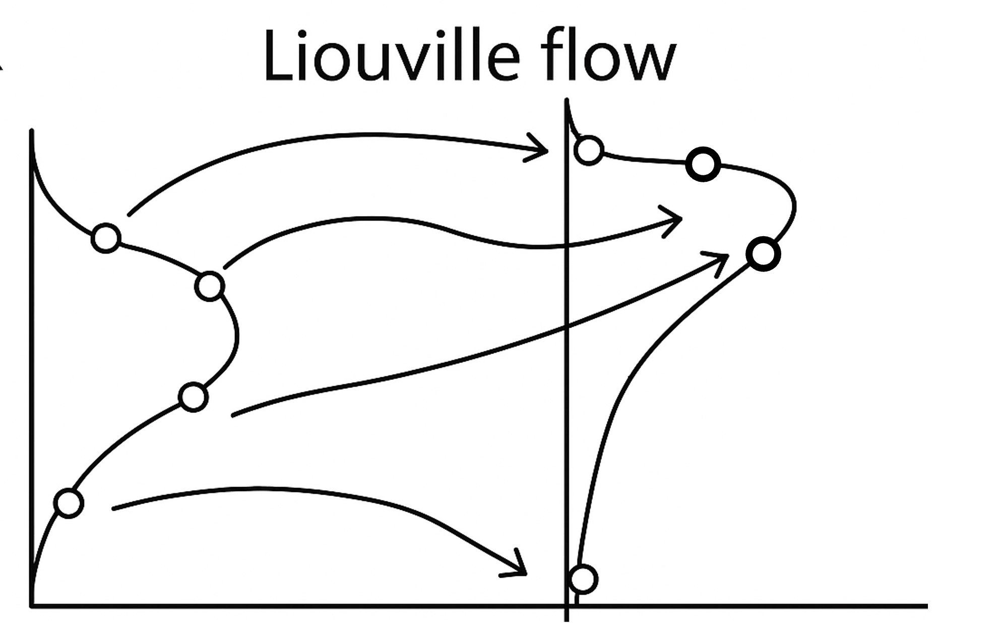
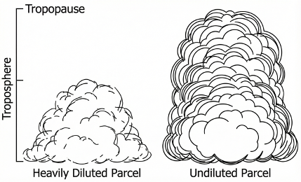
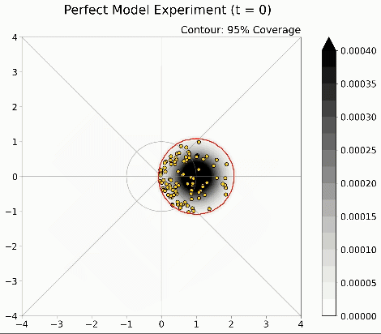
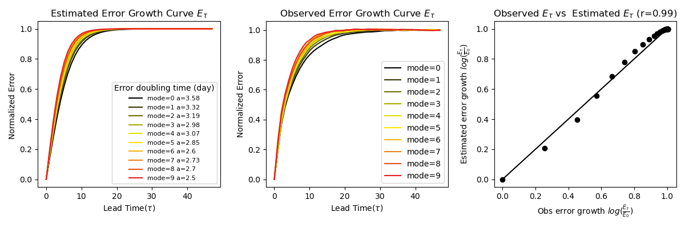
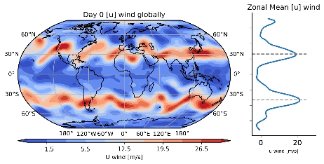
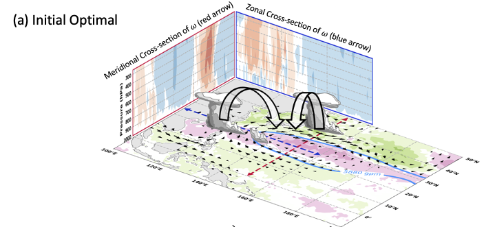

Research Highlights

Machine Learning & Weather
Proposing a proof-of-concept of generating infinity ensemble members by combining machine learning and statistical mechanics.

Convective Coupled Waves
Using idealized GCM simulations, Satellite Observation and Radiative Transfer. We explore the hierarchical transition of the tropical wave regimes.

MJO Moisture Dynamics
Providing a framework to bridge the gap between existing MJO theory and its prediction/predictability.

2D/3D Turbulence
Investigating the characteristics of unlimited/limited predictability of 2D/3D turbulence to optimize numerical weather forecasts.

Annular Mode Variability
Using a hierarchical modeling framework to investigate mechanisms responsible for the over-persistent bias of annular modes in GCMs.

Subtropical High Predictability
Using Causal Discovery methods and dynamical system analysis to study the intrinsic predictability limits of the Western North Pacific Subtropical High.
Group Members
Chris Chang
Research Assistant
Working on the application of linear stochastic theory to MJO dynamics/diagnostic approach.
Yun-Hsuan Ho
Research Assistant
Working on the predictability of subtropical high from subseasonal to seasonal timescales. Current research interests shift to data-driven eddy-closure problem.
Jin-Yu Chang
Research Assistant
Working on moist baroclinic wave and annular mode dynamics (using GFDL DyCore) and predictability.
Shih-Pei Hsu
Ph.D. Student
Working on the future projection of tropical waves using quasi-equilibrium framework.
Yi-An Chen
Ph.D. Student
Working on the application of Liouville equation to S2S forecast of Madden-Julian Oscillation.
Hsuan-Cheng Lin
Graduate Student
Working on monsoon depression/onset with model hierarchy and machine learning.
Ray Kuo
Graduate Student
Working on the information theory and predictability of dynamical systems with special focus on ENSO.
Yi-Ann Feng
Graduate Student
Studying the numerical solution of 2D and 3D turbulence predictability.
Meng-Yu Chien
Graduate Student
Studying the interaction between mean Hadley circulation and moisture mode theory
Yu-Chuan Kan
Graduate Student
Studying the interaction between cumulus/cloud radiative feedback and tropical convectively coupled waves.
Cheng-Feng Li
Graduate Student
Working on the information theory and its application of atmospheric blocking.
Hung-Chih Wu
Undergraduate Student
Working on the transition mechanisms of tropical waves to moisture modes.
Yung-Chang Chen
Undergraduate Student
Working on the information theory and the atmospheric river predictability.
Group Alumni
Jin-De Huang
Research Assistant
Working on the dynamical behavior of annular mode including its persistence/propagation and predictability.
Benjomin Loi
Research Assistant
Working on the information theory and the predictability of tropical cyclones.
Yi-Hui Huang
Undergrad Student
Studying the predictability components of subseasonal variability.